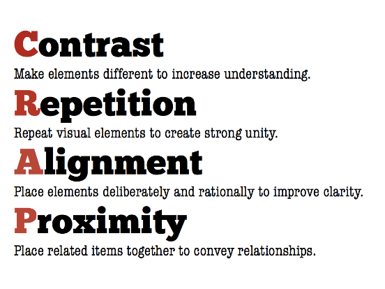
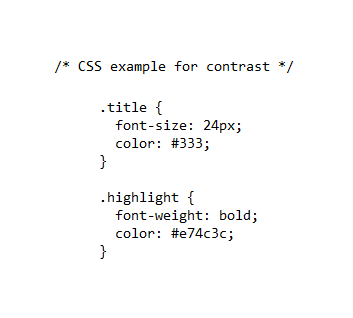
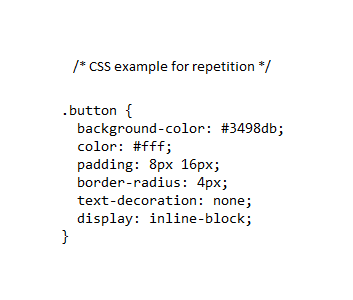
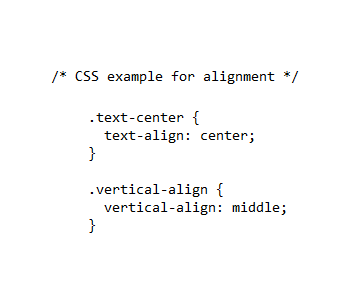
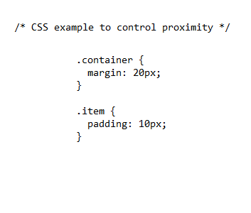

Exploring Aesthetics in Web Development: An Analysis of CSS, HTML
by Fernando Cardozo
Going down to earth
What do I have to understand by C.R.A.P? well it's not nonsense. Every design project that we undertake surely thinks that it must have the same characteristic “it must be unique”, that is, it must have the characteristics to conquer the target and general public. Make our design something different from the rest that impacts the recipient, has information, identity and emotion
For that we apply CRAP!
Web development has undergone a significant transformation as aesthetics currently play a crucial role in the user experience and effectiveness of an interface. To achieve a visually attractive and functional appearance. Using two languages HTML (Hypertext Markup Language) and CSS (Cascading Style Sheets), developers seek to provide solutions through the fundamental principles of visual design, encapsulated in the acronym PARC (Proximity, Alignment, Repetition, Contrast). The languages already mentioned are two elements that have proven to be fundamental when creating visual, functional and captivating experiences in the digital age since they shape the aesthetics of web pages.
Contrast: Highlighting Importance
It is directed to the stimuli through the highlighting of elements or areas of the design, generating notable differences between them. It consists of choosing the main element of the graphic product around which the others will “orbit”, but only the first will stand out from the rest. This is achieved through the use of different colors, fonts, shapes, among others, promoting the brand in comparison scenarios with competitors.
In web design it is manifested by the combination of HTML and CSS to highlight key elements, the first provides the base and the second adds the visual layers using the techniques you already mentioned, thus guiding the user's attention.
Repetition: Consistency for a Strong Identity
It is nothing more than identical shapes identical or similar shapes that appear more than once in the design. It consists of using the same element repeatedly throughout the graphic product. It is vitally important to resort to the repetition of elements when the graphic product is made up of several pages such as catalogs or magazines, providing the design with coherence and consistency using the same fonts, colors and shapes in all the products intended with the objective of building the brand, pro Therefore we can define an element as a key element to define the visual identity of the user's gaze intuitively.
HTML establishes the repetitive structure through the consistent use of classes and tags, while CSS can define common styles for similar elements, allowing you to standardize and customize the patterns created, reinforcing the brand.
Alignment: The Power of Coherence
As its name indicates, this principle contributes to the order of the design, starting with the general guideline that nothing should be placed arbitrarily, therefore all elements must have a visual connection with something else on the page, favoring coherence and order.
In layout and design the html accentuates the bases of the alignment is achieved through attributes such as text-align and vertical-align, adjusts the visual layout through specific properties to align elements, intuitively guiding the user through an aligned design, an appearance clean and professional. If the opposite happens, the brand could lose credibility (although there may be communication strategies that seek this).
Proximity: Harmony in Disposition
This may be the first thing to take into account when designing. This is a simple principle that lies in the grouping of the elements that make up our design. In this way, the public (receiver of the message we want to transmit) can transmit the message in a simple and direct way, allowing the message to be understood quickly. Therefore, we must avoid having too many independent elements on the same page, thus avoiding grouping elements together without reason or explanation.
In web development this principle finds its place in the synergy of HTML and CSS, the first structures the content through a hierarchy of tags, thus defining the logical proximity of the elements, while the second allows adjusting the visual proximity through of margins and spacing therefore. The result improves readability and user perception.
Conclusion
In the world of web development, CSS, HTML, JavaScript, and other languages serve as essential tools for shaping the aesthetics and functionality of digital interfaces. The effective application of visual design principles, encapsulated in PARC, allows developers to create engaging and cohesive user experiences. Proximity, alignment, repetition and contrast are not only key concepts in web design, but also fundamental to achieving effective communication and a memorable user experience.
Bibliography
Smith, J. (2018). "CSS: The Definitive Guide." O'Reilly Media.
Duckett, J. (2014). "HTML and CSS: Design and Build Websites." John Wiley & Sons.
McFarland, D. (2015). "JavaScript & jQuery: The Missing Manual." O'Reilly Media.